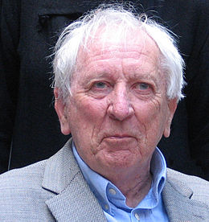

Om
Tranströmer, Tomas, född 15 april 1931, död 26 mars 2015, författare, psykolog, professors namn 2011. Redan i Tranströmers uppmärksammade debutsamling, 17 dikter (1954), förelåg hans stil färdig: en intensivt visionär dikt, full av precist utmejslade formuleringar, visuellt självlysande metaforer, arkaiska mytmotiv och upplevelser av starkt förtätad livskänsla. Kontinuiteten var påfallande i de följande samlingarna: Hemligheter på vägen (1958), Den halvfärdiga himlen (1962) och Klanger och spår (1966). Porträttdikter var vanliga, likaså dikter med musikmotiv och resebilder; historien och samtiden fick allt större plats.
Nobelpris
Nobelpristagare i litteratur 2011. Tomas Tranströmer tilldelades Nobelpriset ”för att han i förtätade, genomlysta bilder ger oss ny tillgång till det verkliga”, enligt Svenska Akademiens prismotivering.
